A Children's Book Story About Distributed Systems
RPCs, GFS, and MapReduce, as understood by a small dog
Jan 12, 2022 · 1985 words · 10 minutes read
Editor’s note: the following document was found in a collection of papers and assignments, apparently dating from late 2020 when the author was stuck inside studying distributed systems. An additional note, written in green and red Crayon on the back of a CVS receipt, was found stapled to the document: “it is now winter . this work features only approximate explanations. it favors silliness over accuracy in some sections. it should be taken with a light hearted grain of salt” [sic].
The following is a verbatim reproduction.
Karl and the Three Dilemmas
Karl sends a letter
Karl is a small terrier who lives in Cambridge, Massachusetts. One wintery day in Cambridge, Karl was looking for something to do. He had already eaten a snack, gone for a walk, chewed a toy, played fetch, and taken a nap, but it was only 2:00PM! He was very bored.
As he was day-dreaming about great snacks he had in the past, he remembered his good friend, Jake, who he hadn’t seen in a while. “I know!” exclaimed Karl. “I’ll see how Jake is doing!”
Unfortunately, Karl didn’t remember Jake’s phone number, but he did remember where he lived, since he would always meet him outside to go for walks together. How would he get in touch with Jake?
Karl remembered another friend, Andrew Birrell, who was great at talking to friends, even when they were far apart. Karl called Andrew to see if he had any ideas.
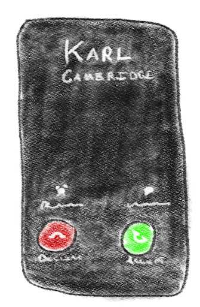“Hello?”
“Hi Andrew, it’s Karl!”
“Hi Karl, how are you?”
“I’m doing well! I had a question for you: I want to ask my friend Jake how he’s doing, but I don’t remember his telephone number. I only have his address. Do you have any ideas for how to get in touch?”
“Sure, Karl, it’s easy! First, you’ll want to figure out what question you want to ask, and write that down on a piece of paper. That way, Jake will know what you want to know. After that, you’ll want to give the letter to your mom, who will put your letter in an envelope and write Jake’s address on it and your address smaller. Don’t forget to put a stamp on it!”
“I won’t!”, said Karl.
“Next,” said Andrew, “you’ll want to go put it in a mailbox. A postal worker will come get it, then it’ll get sent across the state to different warehouses and finally to Jake’s house. Once it gets to Jake’s house, his mom will open the letter and give it to Jake, who will read your question, respond, and send it right back the same way. It’ll almost be as if you’re passing notes to Jake in the same room!”
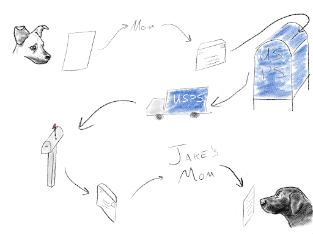“That sounds so easy!” said Karl. “So we don’t have to worry about how it gets to Jake?”
“Nope!” replied Andrew. “You just have to write your question, then your mom will take care of writing Jake’s address and getting it to the post office! It’s really handy to have the post office, since they do the mail delivery for everyone. Otherwise, every time you wanted to write a letter to a friend, you’d have to worry about how to get it there yourself!”
“That sounds great! Thank you so much Andrew!”
“You’re welcome Karl!”
So Karl went and got a piece of paper, wrote his question, handed it to his mom who then got an envelope and a stamp, put the letter the envelope, wrote Jake’s address on the envelope, wrote his own address smaller in the top left, put the stamp on, and dropped it off at the post office.
A week later, a letter came for Karl!
“Dear Karl, thank you for writing! I was really happy to get your letter. I am doing very well! My mom knit me a sweater for Christmas. Hope you’re doing well too! Your friend, Jake.”
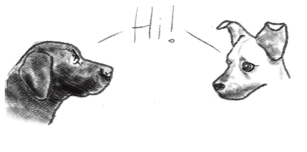It was just like they were in the same room together!
Karl borrows a book from the library
One day on his holiday break from puppy-school, Karl decided he wanted to read a book, but he had already read all of the books in his house. He had heard about a new book, Go, Dog. Go!, from his friend Shiro, and he asked his mom if they had a copy.
“I don’t think so, Karl. Why don’t you see if you can rent it from the library?” asked his mom.
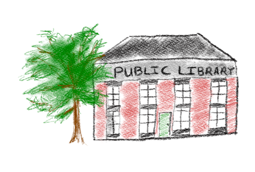The library! Karl had walked past it before, but he had never been inside. Since his mom was busy, Karl decided to ask his friend Sanjay about renting books from the library, since he knew a lot about libraries, filing, and how to organize things. Karl gave Sanjay a call.
“Hello?”
“Hi Sanjay, it’s Karl!”
“Hi Karl! How are you?”
“I’m good, thank you very much! I had a question for you: how do you rent a book from the library?”
“That’s a good question Karl. It’s great to borrow a book from your local library. You used to be able to go to the library and pick a book in person, but it’s a little different these days.”
“Oh yeah?” asked Karl.
“Yeah,” replied Sanjay. “Now, you have to write a letter to the head librarian and ask if you can check out the book. They will look up your library card information to see if you can borrow the book, and if you can, they will write back with the address of the library branch that has that book. You can then write a letter to that library asking for the book, and they’ll send it to you.”
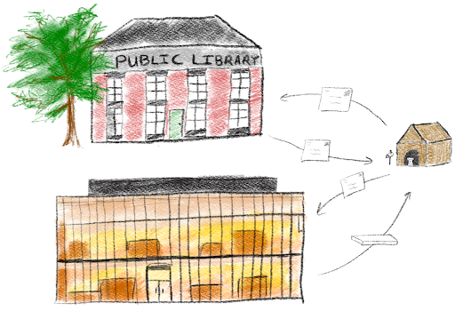“That sounds pretty easy,” said Karl.
“It definitely works!” said Sanjay. “Then, if you ever want to borrow the same book again after you return it, you can write another letter directly to the library branch that has it. I’ve rented the same book many times.”
“That’s great!” said Karl. “I’ve heard really good things about Go, Dog. Go!, and I may want to read it a lot. I am curious though: how would the libraries get new books?”
“That’s a good question, Karl,” said Sanjay. “If someone wanted to give the library copies of a new book, they’d write a letter to the head librarian. If the library can accept the books, the librarian will send back the address of a branch library to send the books to. Once the library gets the books, it can forward on a copy to a few different branches, and those libraries will let the librarian know they have a copy. That way, if anyone else wants to borrow the book, the librarian can send them the address of the closest library with a copy in stock.”
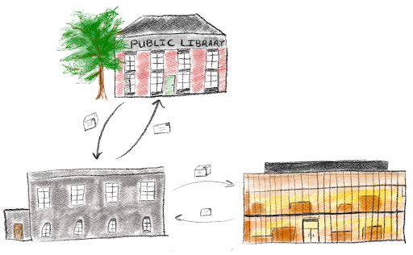“That’s pretty neat!” said Karl. “That sounds like a lot of letters back and forth, and I’m really glad the post office knows how to deliver all of those letters. Now that I think about it, it’s really not that different from borrowing a book from one library through the mail, is it?”
“That’s exactly right!” responded Sanjay. “Just like writing a letter to your friend is like passing them a note, it’s like we’re borrowing a book from one big library, even though it’s actually a bunch of small libraries working together with the head librarian.”
“That makes sense! I think I’m going to go write the librarian a message now. Thanks Sanjay!”
“No problem Karl!”
So Karl went and wrote the librarian a letter asking if he could borrow Go, Dog. Go!.
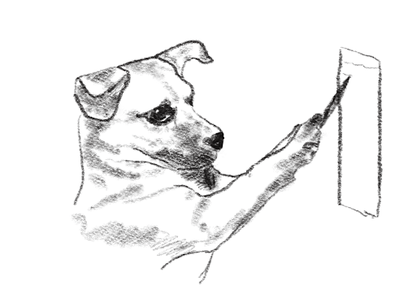A little later, the librarian responded saying he could borrow it, and that he should write a letter to the Central Square branch of the Cambridge Public Library. He wrote them a letter, and they sent him the book.
He read it the same day, and he decided it was his new favorite book.
Karl makes an advent calendar
One day in late November, Karl wrote a letter to his local library to borrow Go, Dog. Go! again, since it was his favorite book. This time, when the book came, a note came with it:
“Have a good idea for an advent calendar of pictures? Send in a quarter and 25 things to draw, and we’ll send you a hand drawn calendar.”
An advent calendar of pictures, how exciting! Karl liked to draw, but every drawing took him a long time since he had trouble holding the pencil.
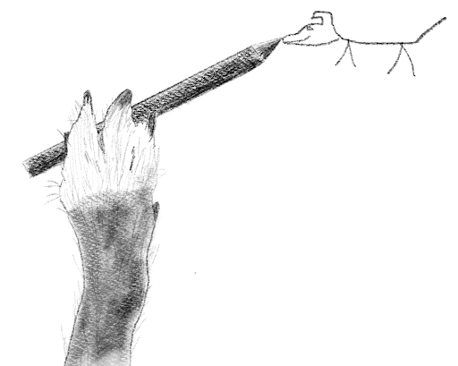But he had a ton of good ideas for drawings! “I wonder what this library advent calendar is all about?” wondered Karl. He then remembered that his friends Jeff and Sanjay were really good at working together and splitting up work, so he decided to give them a call to see if they knew anything about it.
“Hello?”
“Hi Jeff, it’s Karl! How are you?”
“Hi Karl, I’m great! Just working on a problem with Sanjay.”
“Hi Karl!”, said Sanjay.
“Hi Sanjay!”, said Karl. “I had a question for you two. I saw that the local library will make you a calendar if you send in things to draw. Do you two know how it works?”
“Sure!”, said Jeff. “It’s actually very simple. You can send them a list of things to draw, one for each day, and then they’ll have people draw them and send you back a calendar made up of the drawings.”
“That’s so fun!” said Karl. “So one of the assistant librarians draws all of the pictures for me?”
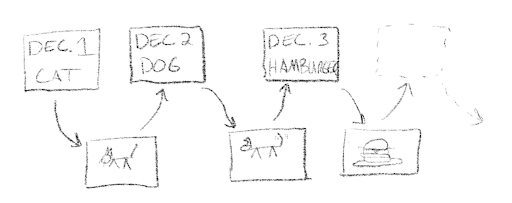“Not quite!”, said Sanjay. “If one librarian does all of the drawing, they’ll have a lot of work to do by themself, even if they’re fast at drawing. Instead, they send out the ideas to a lot of different librarians at different branches! That way, each librarian only has to draw one picture, and they can do them all at the same time.”
“It’s a great idea!” said Jeff. “That way, the assistant librarian can send out a letter with the day and something to draw to each librarian, who can draw it and send it back. Once the assistant librarian has gotten all of the drawings back from the other branches, they put them in order for the calendar. Once they’re in the right order, they paste it all together, put a cover on it, and send it right back to you.”
“That’s fun!” exclaimed Karl. “That sounds like it will be much better than drawing every picture one after another, and I just happened to learn the other day how to send a letter from my friend Andrew, which means it’ll be very easy to write to the librarian.”
“That’s right,” said Sanjay. “And since all of the libraries are talking to each other to keep track of which library books are where, it’s easy for them to keep track of all of the different drawings. It’s like your drawings are the books, and they’re asking each other for them. That way, the assistant librarian handles all of the coordination between all of the other branches, and you just have to tell them what to do for each day!”
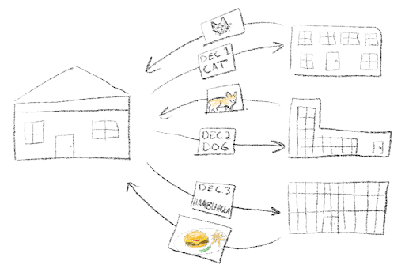“That makes sense!” said Karl. “Thanks so much!”
“No problem Karl! Bye!” said Jeff and Sanjay.
Karl then made a list of 25 things to draw. With his mom’s help, he sent out the list (and a quarter) to the assistant librarian. A week later, he got the full calendar! The assistant librarian even included a note apologizing for the delay, explaining that they had to wait a little for the very last one, since the librarian at the Brighton branch draws very slowly.
Karl sent a picture of the calendar to Jeff and Sanjay. “Looks good to me!”, they said.
Karl put the calendar right next to his bed so he could see it when he went to sleep.
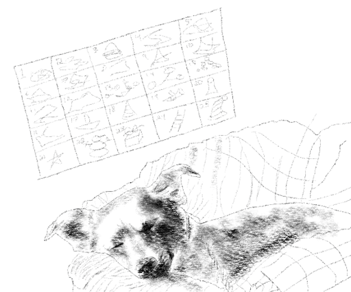Editor’s note: this photo was also found with the document with a sticky note attached that said “dog tax”.
{kind=link}